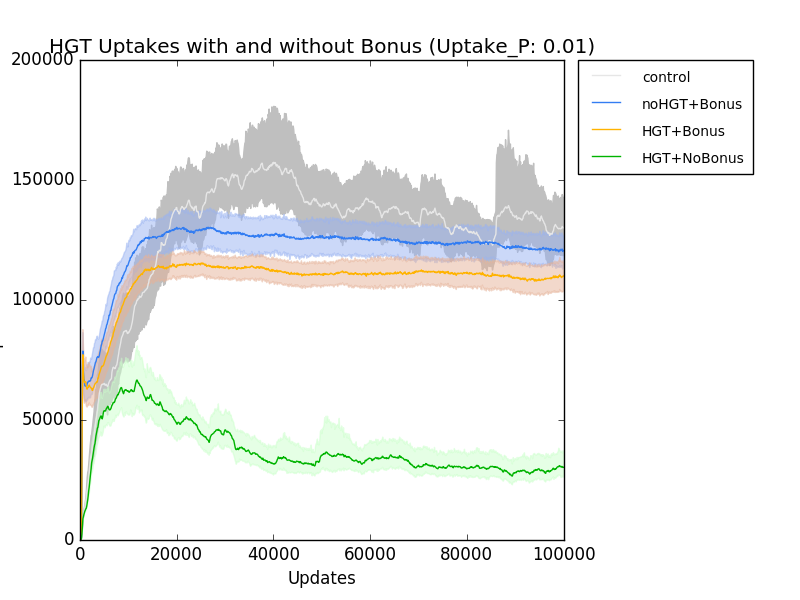
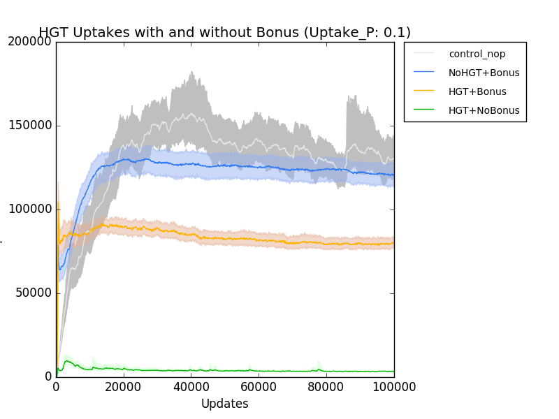
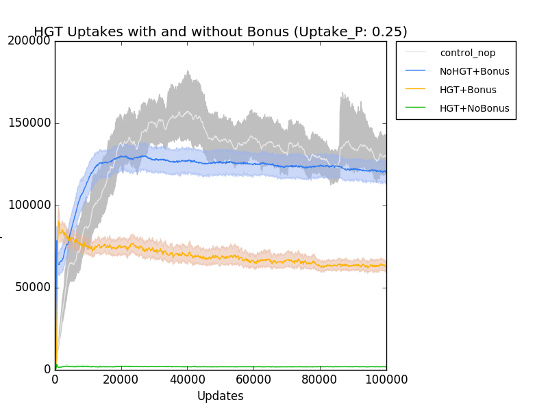

Totally did work yesterday. Banged my head against the thing all day. Trying to get my figure to include error bars that are generated via bootstrap, rather than the STD confidence intervals. I've finally gotten it to generate stuff, but let me tell you, the jupyter notebook has some problems with stuff going super slow and then hanging. :( I had to keep restarting the kernel, until I figured out that if I mash the interrupt button a shit ton of times, it finally stops a cell from executing. Argh.
I spent all day yesterday getting plotting working from within pandas and learning a ton of stuff. Ultimately, I'm not happy doing it this way at all. I've already written scripts that do this stuff for me, and it seems imbecilic to not use my existing scripts. So, the goal today is to try to get my existing scripts working, and have a way to load it all painlessly. Ultimately, my stuff isn't for outside consumption, really. It's for me, so I can recreate my thought process as I was doing data analysis. Unfortunately, this is all about creating a redundant system for my notebook, since it's not all in the same place. :/
Ok, after tinkering quite a bit with my graphing scripts, I've figured out a way to incorporate them, particularly quickplot, unmolested, into my Jupyter notebooks. Here's a link to the HGT analysis notebook.
http://localhost:8888/notebooks/Dropbox/School_Docs/Research/HGT/Analysis.ipynb#
Of particular interest:

I can show here that the HGT/noBonus is depressed quite low when there is a 1/4 chance of getting an event, but those with HGT/Bonus it still remains relatively frequent, at about half the rate as the pure Bonus. I think the sweet-spot is P=0.1. This may also tell us something interesting about the interplay between the recombination effect and the worthwhileness of the bonus. It's probably tenuous, though.
The defaults are at a bonus of 1, and a homologous recombination site default of 1. I'm going to need to do survey runs of both those parameters as well.
I expect as the bonus increases, it'll behave more like the lower chance runs (.01 and .001). Equally, I expect that with higher homology, it would also be depressed less. The current default of 1 site seems like it is low, per conversation with Mike.
I'll also need to do a sweep of fragment sizes to see the effects there. Current default is fragment size 10 with std 2.
Todo: